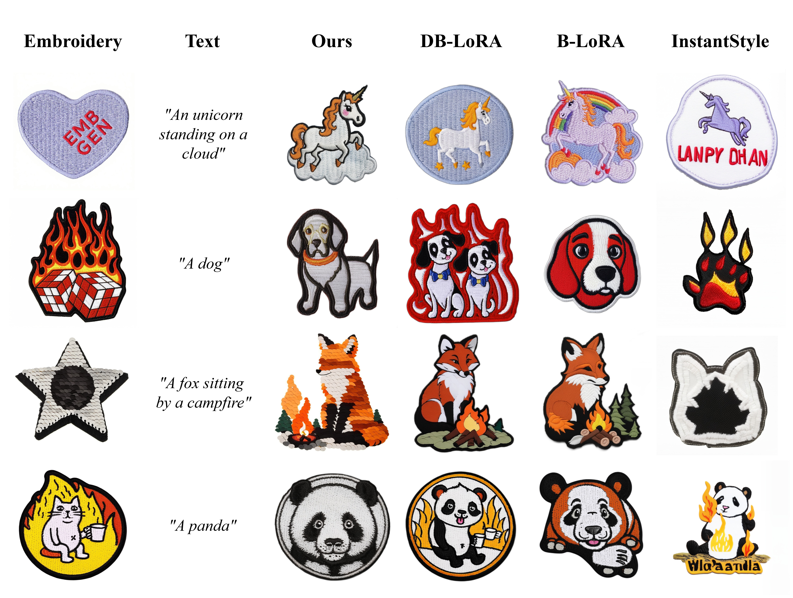
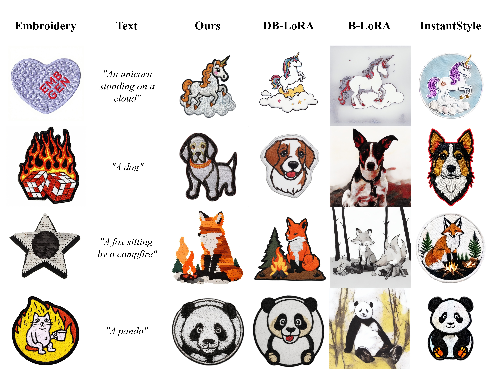
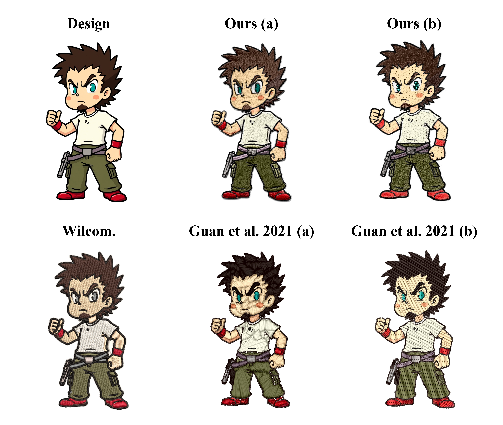
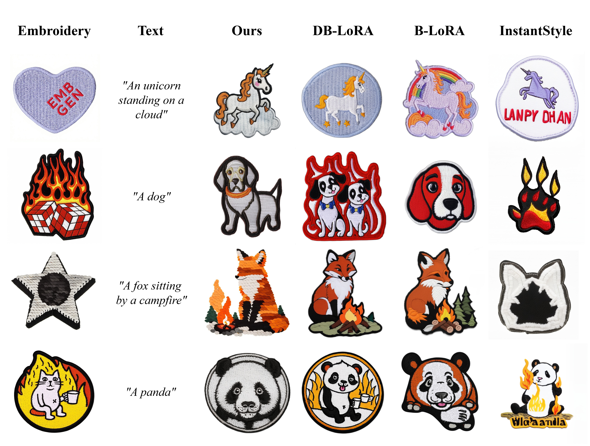
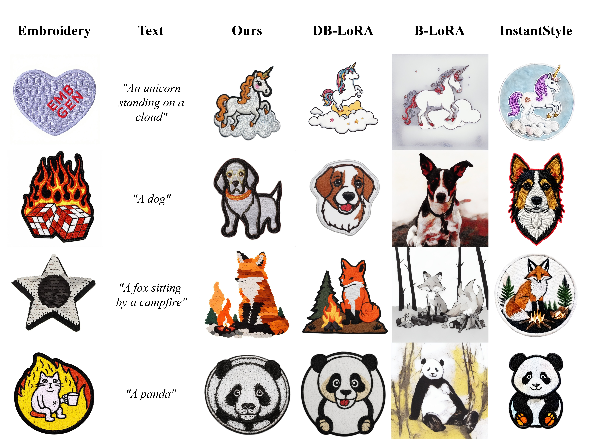
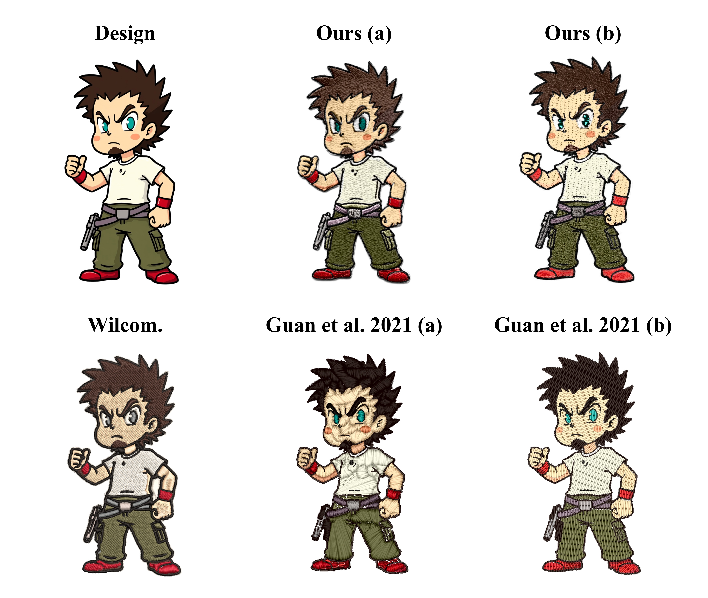

Given reference embroidery images, our method generates new results from either image inputs or text descriptions.
Diffusion models have significantly advanced image manipulation techniques, and their ability to generate photorealistic images is beginning to transform retail workflows, particularly in presale visualization. Beyond artistic style transfer, the capability to perform fine-grained visual feature transfer is becoming increasingly important.
Embroidery is a textile art form characterized by intricate interplay of diverse stitch patterns and material properties, which poses unique challenges for existing style transfer methods. To explore the customization for such fine-grained features, we propose a novel contrastive learning framework that disentangles fine-grained style and content features with a single reference image, building on the classic concept of image analogy. We first construct an image pair to define the target style, and then adopt a similarity metric based on the decoupled representations of pretrained diffusion models for style-content separation. Subsequently, we propose a two-stage contrastive LoRA modulation technique to capture fine-grained style features. In the first stage, we iteratively update the whole LoRA and the selected style blocks to initially separate style from content. In the second stage, we design a contrastive learning strategy to further decouple style and content through self-knowledge distillation. Finally, we build an inference pipeline to handle image or text inputs with only the style blocks.
To evaluate our method on fine-grained style transfer, we build a benchmark for embroidery customization. Our approach surpasses prior methods on this task and further demonstrates strong generalization to three additional domains: artistic style transfer, sketch colorization, and appearance transfer.
We propose EmoLoRA, a two-stage contrastive LoRA learning framework for fine-grained style customization from a single reference embroidery image.
1. Pair-wise data construction: We convert the reference embroidery into a clean graphic design using ControlNet (HED + Tile) and caption prompts, forming embroidery–design pairs that define style/content separation.
2. First-stage training: We train a LoRA on SDXL to decouple style and content by selectively updating style-related UNet blocks while keeping others focused on design recovery.
3. Complementary data generation: The trained LoRA generates more embroidery images with diverse color–object prompts. We filter these generations using attention-feature similarity and obtain paired design images.
4. Second-stage contrastive learning: We perform contrastive training in the noised latent space to further disentangle embroidery style from content, pulling style features together while pushing them away from content features.
5. Inference: During image-based generation or text-based generation, only the style blocks are applied to SDXL, optionally with ControlNets and color correction, enabling faithful content preservation with precise style transfer.
We showcase image-based generation and text-based generation results. For image inputs, EmoLoRA faithfully preserves design layouts while transferring embroidery style. For text inputs, our method produces realistic embroideries that follow prompts and maintain style–content decoupling.
Click a reference embroidery below to generate the result

 




